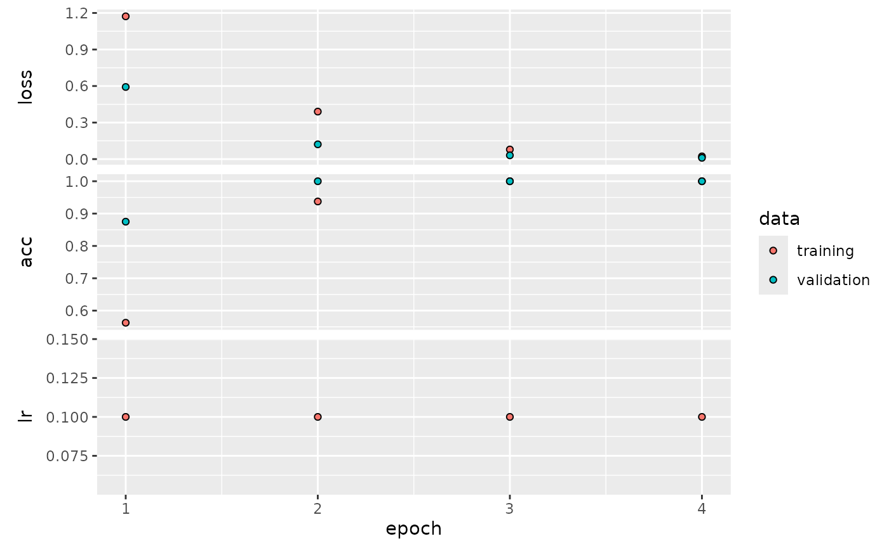

devtools::install_github("GenomeNet/deepG")
library(deepG)
library(magrittr)The deepG library offers several options to extract input/target pairs from data. We can differentiate between to main approach:
- Language model: predict a character or several characters in a sequence.
- Label Classification: map a label to a sequence.
Language model
With language model, we mean a model that predicts a character in a
sequence. We have several options to determine the output format of the
data generator using the output_format argument.
The output_format determines the shape of the output for
a language model, i.e. part of a sequence is the input \(X\) and another the target \(Y\). Assume a sequence abcdefg and
maxlen = 6. Output correspond as follows
“target_right”: \(X=\) abcdef, \(Y=\) g
“target_middle_lstm”: \(X =\) (\(X_1 =\) abc, \(X_2 =\) gfe), \(Y=\) d (note reversed order of \(X_2\))
“target_middle_cnn”: \(X =\) abcefg, \(Y =\) d
“wavenet”: \(X =\) abcdef, \(Y =\) bcdefg
Create dummy data
To test the different language model options, we create a simple dummy data set consisting of a repetition of the sequence AAACCCGGGTTTAAACCC….
vocabulary <- c("A", "C", "G", "T")
base_seq <- "AAACCCGGGTTT"
full_seq <- strrep(base_seq, 50)
df <- data.frame(Header = "header", Sequence = full_seq)
# create training fasta file
train_dir <- tempfile()
dir.create(train_dir)
microseq::writeFasta(df, file.path(train_dir, "train_1.fasta"))
# create validation fasta file (use same data as training)
val_dir <- tempfile()
dir.create(val_dir)
microseq::writeFasta(df, file.path(val_dir, "val_1.fasta"))Predict next character
Say we want to predict the next character in a sequence given the last 5 characters and our text consists of the letters A,C,G,T . First we have to create a model. We may use a model with 1 LSTM and 1 dense layer for predictions.
model <- create_model_lstm_cnn(
maxlen = 5,
layer_lstm = c(8),
layer_dense = c(4),
learning_rate = 0.1,
vocabulary_size = 4 # text consists of A,C,G,T
)## Model: "model"
## _________________________________________________________________
## Layer (type) Output Shape Param #
## =================================================================
## input_1 (InputLayer) [(None, 5, 4)] 0
##
## lstm (LSTM) (None, 8) 416
##
## dense (Dense) (None, 4) 36
##
## =================================================================
## Total params: 452 (1.77 KB)
## Trainable params: 452 (1.77 KB)
## Non-trainable params: 0 (0.00 Byte)
## _________________________________________________________________Next we have to specify the location of our training and validation data and the output format of the data generator
hist <- train_model(train_type = "lm", # running a language model
output_format = "target_right", # predict target at end of sequence
model = model,
path = train_dir,
path_val = val_dir,
steps_per_epoch = 5, # use 5 batches per epoch
train_val_ratio = 0.2, # use 20% of samples for validation compared to train
batch_size = 16,
epochs = 4)## Epoch 1/4
## 1/5 [=====>........................] - ETA: 3s - loss: 1.4181 - acc: 0.18755/5 [==============================] - 1s 66ms/step - loss: 1.0798 - acc: 0.5750 - val_loss: 0.4810 - val_acc: 0.9375 - lr: 0.1000
## Epoch 2/4
## 1/5 [=====>........................] - ETA: 0s - loss: 0.4939 - acc: 0.87505/5 [==============================] - 0s 17ms/step - loss: 0.2926 - acc: 0.9500 - val_loss: 0.1117 - val_acc: 1.0000 - lr: 0.1000
## Epoch 3/4
## 1/5 [=====>........................] - ETA: 0s - loss: 0.1209 - acc: 1.00005/5 [==============================] - 0s 16ms/step - loss: 0.0633 - acc: 1.0000 - val_loss: 0.0238 - val_acc: 1.0000 - lr: 0.1000
## Epoch 4/4
## 1/5 [=====>........................] - ETA: 0s - loss: 0.0256 - acc: 1.00005/5 [==============================] - 0s 15ms/step - loss: 0.0146 - acc: 1.0000 - val_loss: 0.0071 - val_acc: 1.0000 - lr: 0.1000
plot(hist)
Predict character in middle of sequence
If we want to predict a character in the middle of a sequence and use LSTM layers, we should split our input into two layers. One layer handles the sequence before and one the input after the target. If, for example
sequence: ACCGTGGAA
then first input corresponds to ACCG and second to
AAGG. We may create a model with two input layers using the
create_model_cnn_lstm_target_middle
model <- create_model_lstm_cnn_target_middle(
maxlen = 5,
layer_lstm = c(8),
layer_dense = c(4),
learning_rate = 0.1,
vocabulary_size = 4
)## Model: "model_1"
## __________________________________________________________________________________________________
## Layer (type) Output Shape Param # Connected to
## ==================================================================================================
## input_2 (InputLayer) [(None, 3, 4)] 0 []
##
## input_3 (InputLayer) [(None, 2, 4)] 0 []
##
## lstm_1 (LSTM) (None, 8) 416 ['input_2[0][0]']
##
## lstm_2 (LSTM) (None, 8) 416 ['input_3[0][0]']
##
## concatenate (Concatenate) (None, 16) 0 ['lstm_1[0][0]',
## 'lstm_2[0][0]']
##
## dense_1 (Dense) (None, 4) 68 ['concatenate[0][0]']
##
## ==================================================================================================
## Total params: 900 (3.52 KB)
## Trainable params: 900 (3.52 KB)
## Non-trainable params: 0 (0.00 Byte)
## __________________________________________________________________________________________________The train_model call is identical to the previous model,
except we have to change the output format of the generator by setting
output_format = "target_middle_lstm". This reverses the
order of the sequence after the target.
hist <- train_model(train_type = "lm", # running a language model
output_format = "target_middle_lstm", # predict target in middle of sequence
model = model,
path = train_dir,
path_val = val_dir,
steps_per_epoch = 5, # use 5 batches per epoch
train_val_ratio = 0.2, # use 20% of samples for validation compared to train
batch_size = 16,
epochs = 4)## Epoch 1/4
## 1/5 [=====>........................] - ETA: 5s - loss: 1.4342 - acc: 0.06255/5 [==============================] - 2s 97ms/step - loss: 1.0541 - acc: 0.5250 - val_loss: 0.4543 - val_acc: 0.8125 - lr: 0.1000
## Epoch 2/4
## 1/5 [=====>........................] - ETA: 0s - loss: 0.4704 - acc: 0.81255/5 [==============================] - 0s 18ms/step - loss: 0.2757 - acc: 0.9000 - val_loss: 0.1071 - val_acc: 1.0000 - lr: 0.1000
## Epoch 3/4
## 1/5 [=====>........................] - ETA: 0s - loss: 0.1508 - acc: 1.00005/5 [==============================] - 0s 19ms/step - loss: 0.1090 - acc: 0.9625 - val_loss: 0.0476 - val_acc: 1.0000 - lr: 0.1000
## Epoch 4/4
## 1/5 [=====>........................] - ETA: 0s - loss: 0.0492 - acc: 1.00005/5 [==============================] - 0s 20ms/step - loss: 0.0274 - acc: 1.0000 - val_loss: 0.0035 - val_acc: 1.0000 - lr: 0.1000
plot(hist)
Masked language model
Here we mask some parts of the input sequence and the model tries to predict the masked regions. Can be used for training BERT-like models. See also this notebook. We can first check how the generator works.
# create dummy training data
nt_seq <- rep(c("A", "C", "G", "T"), each = 25) %>% paste(collapse = "") %>% strrep(10)
df <- data.frame(Sequence = nt_seq, Header = "seq_1")
fasta_path <- tempfile(fileext = ".fasta")
fasta_file <- microseq::writeFasta(df, fasta_path)
masked_lm <- list(mask_rate = 0.10, # replace 10% of input with special mask token
random_rate = 0.03, # set 3% of input to random value
identity_rate = 0.02, # leave 2% unchanged (and set sample weight to 1)
include_sw = TRUE) # 0,1 matrix showing where masking was applied
gen <- get_generator(path = fasta_path,
train_type = "masked_lm",
masked_lm = masked_lm,
batch_size = 1,
n_gram = 1,
n_gram_stride = 1,
return_int = TRUE,
maxlen = 100,
vocabulary = c("A", "C", "G", "T"))
z <- gen()
x <- z[[1]]
y <- z[[2]]
sw <- z[[3]]
df <- data.frame(x = x[1, ], y = y[1, ], sw = sw[1, ])
print(head(df), 10)## x y sw
## 1 5 1 1
## 2 1 1 0
## 3 1 1 0
## 4 1 1 0
## 5 1 1 0
## 6 1 1 0
print(df[ df$sw == 1, ])## x y sw
## 1 5 1 1
## 7 5 1 1
## 14 5 1 1
## 21 1 1 1
## 34 5 2 1
## 43 2 2 1
## 51 4 3 1
## 54 5 3 1
## 59 3 3 1
## 73 5 3 1
## 74 5 3 1
## 79 5 4 1
## 82 5 4 1
## 85 5 4 1
## 87 2 4 1Create the model architecture.
model <- create_model_transformer(
maxlen = 100,
vocabulary_size = 6,
embed_dim = 16,
ff_dim = 32,
pos_encoding = "embedding",
head_size = 20,
num_heads = 4,
layer_dense = 6,
flatten_method = "none",
last_layer_activation = "softmax",
loss_fn = "sparse_categorical_crossentropy",
solver = "adam",
learning_rate = 0.005
)## Model: "model_2"
## ________________________________________________________________________________
## Layer (type) Output Shape Param #
## ================================================================================
## input_4 (InputLayer) [(None, 100)] 0
## layer_pos_embedding (layer_pos_em (None, 100, 16) 1696
## bedding)
## layer_transformer_block (layer_tr (None, 100, 16) 6512
## ansformer_block)
## dense_4 (Dense) (None, 100, 6) 102
## ================================================================================
## Total params: 8310 (32.46 KB)
## Trainable params: 8310 (32.46 KB)
## Non-trainable params: 0 (0.00 Byte)
## ________________________________________________________________________________Train the model.
batch_size <- 128
masked_lm <- list(mask_rate = 0.10, random_rate = 0.03, identity_rate = 0.02, include_sw = TRUE)
hist <- train_model(model = model,
# training args
run_name = "bert_1",
epochs = 8,
steps_per_epoch = 75,
# generator args
maxlen = 100,
train_type = "masked_lm",
path = fasta_path,
path_val = NULL,
batch_size = batch_size,
step = 25,
masked_lm = masked_lm,
proportion_per_seq = 0.97,
return_int = TRUE)## Epoch 1/8
## 1/75 [..............................] - ETA: 1:01 - loss: 0.3360 - acc: 0.0992 2/75 [..............................] - ETA: 4s - loss: 0.3066 - acc: 0.1996 3/75 [>.............................] - ETA: 4s - loss: 0.2818 - acc: 0.2636 4/75 [>.............................] - ETA: 4s - loss: 0.2666 - acc: 0.3311 5/75 [=>............................] - ETA: 3s - loss: 0.2572 - acc: 0.3902 6/75 [=>............................] - ETA: 3s - loss: 0.2508 - acc: 0.4421 7/75 [=>............................] - ETA: 3s - loss: 0.2454 - acc: 0.4794 8/75 [==>...........................] - ETA: 3s - loss: 0.2409 - acc: 0.5232 9/75 [==>...........................] - ETA: 3s - loss: 0.2373 - acc: 0.565210/75 [===>..........................] - ETA: 3s - loss: 0.2341 - acc: 0.598711/75 [===>..........................] - ETA: 3s - loss: 0.2317 - acc: 0.624413/75 [====>.........................] - ETA: 3s - loss: 0.2281 - acc: 0.654514/75 [====>.........................] - ETA: 3s - loss: 0.2269 - acc: 0.664916/75 [=====>........................] - ETA: 3s - loss: 0.2243 - acc: 0.691417/75 [=====>........................] - ETA: 3s - loss: 0.2231 - acc: 0.703819/75 [======>.......................] - ETA: 2s - loss: 0.2212 - acc: 0.724720/75 [=======>......................] - ETA: 2s - loss: 0.2202 - acc: 0.733622/75 [=======>......................] - ETA: 2s - loss: 0.2185 - acc: 0.749023/75 [========>.....................] - ETA: 2s - loss: 0.2176 - acc: 0.755925/75 [=========>....................] - ETA: 2s - loss: 0.2162 - acc: 0.767526/75 [=========>....................] - ETA: 2s - loss: 0.2156 - acc: 0.772728/75 [==========>...................] - ETA: 2s - loss: 0.2145 - acc: 0.781929/75 [==========>...................] - ETA: 2s - loss: 0.2140 - acc: 0.786130/75 [===========>..................] - ETA: 2s - loss: 0.2137 - acc: 0.789931/75 [===========>..................] - ETA: 2s - loss: 0.2133 - acc: 0.793533/75 [============>.................] - ETA: 2s - loss: 0.2124 - acc: 0.800134/75 [============>.................] - ETA: 2s - loss: 0.2120 - acc: 0.803136/75 [=============>................] - ETA: 2s - loss: 0.2111 - acc: 0.808737/75 [=============>................] - ETA: 1s - loss: 0.2109 - acc: 0.811238/75 [==============>...............] - ETA: 1s - loss: 0.2107 - acc: 0.813739/75 [==============>...............] - ETA: 1s - loss: 0.2104 - acc: 0.816040/75 [===============>..............] - ETA: 1s - loss: 0.2100 - acc: 0.818242/75 [===============>..............] - ETA: 1s - loss: 0.2094 - acc: 0.822344/75 [================>.............] - ETA: 1s - loss: 0.2091 - acc: 0.825945/75 [=================>............] - ETA: 1s - loss: 0.2088 - acc: 0.827746/75 [=================>............] - ETA: 1s - loss: 0.2085 - acc: 0.829448/75 [==================>...........] - ETA: 1s - loss: 0.2081 - acc: 0.832549/75 [==================>...........] - ETA: 1s - loss: 0.2079 - acc: 0.833951/75 [===================>..........] - ETA: 1s - loss: 0.2076 - acc: 0.836552/75 [===================>..........] - ETA: 1s - loss: 0.2075 - acc: 0.837854/75 [====================>.........] - ETA: 1s - loss: 0.2071 - acc: 0.840355/75 [=====================>........] - ETA: 1s - loss: 0.2069 - acc: 0.841557/75 [=====================>........] - ETA: 0s - loss: 0.2065 - acc: 0.843758/75 [======================>.......] - ETA: 0s - loss: 0.2063 - acc: 0.844860/75 [=======================>......] - ETA: 0s - loss: 0.2060 - acc: 0.846861/75 [=======================>......] - ETA: 0s - loss: 0.2058 - acc: 0.847762/75 [=======================>......] - ETA: 0s - loss: 0.2056 - acc: 0.848763/75 [========================>.....] - ETA: 0s - loss: 0.2055 - acc: 0.849664/75 [========================>.....] - ETA: 0s - loss: 0.2054 - acc: 0.850466/75 [=========================>....] - ETA: 0s - loss: 0.2053 - acc: 0.852068/75 [==========================>...] - ETA: 0s - loss: 0.2051 - acc: 0.853669/75 [==========================>...] - ETA: 0s - loss: 0.2050 - acc: 0.854371/75 [===========================>..] - ETA: 0s - loss: 0.2049 - acc: 0.855772/75 [===========================>..] - ETA: 0s - loss: 0.2048 - acc: 0.856474/75 [============================>.] - ETA: 0s - loss: 0.2045 - acc: 0.857875/75 [==============================] - ETA: 0s - loss: 0.2045 - acc: 0.858475/75 [==============================] - 5s 52ms/step - loss: 0.2045 - acc: 0.8584 - lr: 0.0050
## Epoch 2/8
## 1/75 [..............................] - ETA: 3s - loss: 0.1943 - acc: 0.9052 2/75 [..............................] - ETA: 3s - loss: 0.1968 - acc: 0.9043 3/75 [>.............................] - ETA: 3s - loss: 0.1966 - acc: 0.9055 4/75 [>.............................] - ETA: 3s - loss: 0.1969 - acc: 0.9053 5/75 [=>............................] - ETA: 3s - loss: 0.1977 - acc: 0.9051 6/75 [=>............................] - ETA: 3s - loss: 0.1966 - acc: 0.9058 8/75 [==>...........................] - ETA: 3s - loss: 0.1970 - acc: 0.9058 9/75 [==>...........................] - ETA: 3s - loss: 0.1969 - acc: 0.905911/75 [===>..........................] - ETA: 4s - loss: 0.1970 - acc: 0.905912/75 [===>..........................] - ETA: 4s - loss: 0.1968 - acc: 0.906014/75 [====>.........................] - ETA: 3s - loss: 0.1971 - acc: 0.905415/75 [=====>........................] - ETA: 3s - loss: 0.1971 - acc: 0.905417/75 [=====>........................] - ETA: 3s - loss: 0.1970 - acc: 0.905618/75 [======>.......................] - ETA: 3s - loss: 0.1969 - acc: 0.905720/75 [=======>......................] - ETA: 3s - loss: 0.1968 - acc: 0.906021/75 [=======>......................] - ETA: 3s - loss: 0.1970 - acc: 0.905923/75 [========>.....................] - ETA: 2s - loss: 0.1966 - acc: 0.906124/75 [========>.....................] - ETA: 2s - loss: 0.1966 - acc: 0.906126/75 [=========>....................] - ETA: 2s - loss: 0.1964 - acc: 0.906227/75 [=========>....................] - ETA: 2s - loss: 0.1964 - acc: 0.906228/75 [==========>...................] - ETA: 2s - loss: 0.1966 - acc: 0.906229/75 [==========>...................] - ETA: 2s - loss: 0.1965 - acc: 0.906431/75 [===========>..................] - ETA: 2s - loss: 0.1962 - acc: 0.906432/75 [===========>..................] - ETA: 2s - loss: 0.1964 - acc: 0.906334/75 [============>.................] - ETA: 2s - loss: 0.1965 - acc: 0.906035/75 [=============>................] - ETA: 2s - loss: 0.1966 - acc: 0.906137/75 [=============>................] - ETA: 2s - loss: 0.1965 - acc: 0.906238/75 [==============>...............] - ETA: 2s - loss: 0.1966 - acc: 0.906240/75 [===============>..............] - ETA: 1s - loss: 0.1967 - acc: 0.906341/75 [===============>..............] - ETA: 1s - loss: 0.1966 - acc: 0.906343/75 [================>.............] - ETA: 1s - loss: 0.1966 - acc: 0.906444/75 [================>.............] - ETA: 1s - loss: 0.1965 - acc: 0.906445/75 [=================>............] - ETA: 1s - loss: 0.1966 - acc: 0.906446/75 [=================>............] - ETA: 1s - loss: 0.1965 - acc: 0.906447/75 [=================>............] - ETA: 1s - loss: 0.1966 - acc: 0.906448/75 [==================>...........] - ETA: 1s - loss: 0.1965 - acc: 0.906449/75 [==================>...........] - ETA: 1s - loss: 0.1966 - acc: 0.906550/75 [===================>..........] - ETA: 1s - loss: 0.1966 - acc: 0.906552/75 [===================>..........] - ETA: 1s - loss: 0.1965 - acc: 0.906653/75 [====================>.........] - ETA: 1s - loss: 0.1966 - acc: 0.906554/75 [====================>.........] - ETA: 1s - loss: 0.1967 - acc: 0.906556/75 [=====================>........] - ETA: 1s - loss: 0.1965 - acc: 0.906658/75 [======================>.......] - ETA: 0s - loss: 0.1964 - acc: 0.906759/75 [======================>.......] - ETA: 0s - loss: 0.1965 - acc: 0.906760/75 [=======================>......] - ETA: 0s - loss: 0.1965 - acc: 0.906861/75 [=======================>......] - ETA: 0s - loss: 0.1965 - acc: 0.906862/75 [=======================>......] - ETA: 0s - loss: 0.1965 - acc: 0.906963/75 [========================>.....] - ETA: 0s - loss: 0.1964 - acc: 0.907064/75 [========================>.....] - ETA: 0s - loss: 0.1963 - acc: 0.907166/75 [=========================>....] - ETA: 0s - loss: 0.1962 - acc: 0.907167/75 [=========================>....] - ETA: 0s - loss: 0.1962 - acc: 0.907269/75 [==========================>...] - ETA: 0s - loss: 0.1961 - acc: 0.907370/75 [===========================>..] - ETA: 0s - loss: 0.1960 - acc: 0.907472/75 [===========================>..] - ETA: 0s - loss: 0.1960 - acc: 0.907473/75 [============================>.] - ETA: 0s - loss: 0.1959 - acc: 0.907475/75 [==============================] - ETA: 0s - loss: 0.1959 - acc: 0.907575/75 [==============================] - 4s 53ms/step - loss: 0.1959 - acc: 0.9075 - lr: 0.0050
## Epoch 3/8
## 1/75 [..............................] - ETA: 3s - loss: 0.1914 - acc: 0.9073 3/75 [>.............................] - ETA: 3s - loss: 0.1935 - acc: 0.9074 4/75 [>.............................] - ETA: 3s - loss: 0.1949 - acc: 0.9068 5/75 [=>............................] - ETA: 3s - loss: 0.1935 - acc: 0.9051 6/75 [=>............................] - ETA: 3s - loss: 0.1933 - acc: 0.9013 7/75 [=>............................] - ETA: 3s - loss: 0.1925 - acc: 0.9033 8/75 [==>...........................] - ETA: 3s - loss: 0.1925 - acc: 0.9045 9/75 [==>...........................] - ETA: 3s - loss: 0.1923 - acc: 0.904210/75 [===>..........................] - ETA: 3s - loss: 0.1924 - acc: 0.904112/75 [===>..........................] - ETA: 3s - loss: 0.1924 - acc: 0.903413/75 [====>.........................] - ETA: 3s - loss: 0.1926 - acc: 0.903115/75 [=====>........................] - ETA: 3s - loss: 0.1924 - acc: 0.903116/75 [=====>........................] - ETA: 3s - loss: 0.1926 - acc: 0.903318/75 [======>.......................] - ETA: 2s - loss: 0.1924 - acc: 0.902819/75 [======>.......................] - ETA: 2s - loss: 0.1924 - acc: 0.902921/75 [=======>......................] - ETA: 2s - loss: 0.1921 - acc: 0.903723/75 [========>.....................] - ETA: 2s - loss: 0.1918 - acc: 0.903224/75 [========>.....................] - ETA: 2s - loss: 0.1916 - acc: 0.903826/75 [=========>....................] - ETA: 2s - loss: 0.1915 - acc: 0.904027/75 [=========>....................] - ETA: 2s - loss: 0.1913 - acc: 0.904428/75 [==========>...................] - ETA: 2s - loss: 0.1913 - acc: 0.904529/75 [==========>...................] - ETA: 2s - loss: 0.1913 - acc: 0.904630/75 [===========>..................] - ETA: 2s - loss: 0.1912 - acc: 0.904732/75 [===========>..................] - ETA: 2s - loss: 0.1911 - acc: 0.905133/75 [============>.................] - ETA: 2s - loss: 0.1911 - acc: 0.905134/75 [============>.................] - ETA: 2s - loss: 0.1911 - acc: 0.905235/75 [=============>................] - ETA: 2s - loss: 0.1911 - acc: 0.905236/75 [=============>................] - ETA: 2s - loss: 0.1910 - acc: 0.905038/75 [==============>...............] - ETA: 1s - loss: 0.1907 - acc: 0.905539/75 [==============>...............] - ETA: 1s - loss: 0.1906 - acc: 0.905341/75 [===============>..............] - ETA: 1s - loss: 0.1904 - acc: 0.904642/75 [===============>..............] - ETA: 1s - loss: 0.1900 - acc: 0.904644/75 [================>.............] - ETA: 1s - loss: 0.1894 - acc: 0.904545/75 [=================>............] - ETA: 1s - loss: 0.1888 - acc: 0.904247/75 [=================>............] - ETA: 1s - loss: 0.1875 - acc: 0.904248/75 [==================>...........] - ETA: 1s - loss: 0.1866 - acc: 0.904250/75 [===================>..........] - ETA: 1s - loss: 0.1848 - acc: 0.902451/75 [===================>..........] - ETA: 1s - loss: 0.1837 - acc: 0.901453/75 [====================>.........] - ETA: 1s - loss: 0.1816 - acc: 0.899454/75 [====================>.........] - ETA: 1s - loss: 0.1805 - acc: 0.898555/75 [=====================>........] - ETA: 1s - loss: 0.1794 - acc: 0.897856/75 [=====================>........] - ETA: 0s - loss: 0.1784 - acc: 0.897258/75 [======================>.......] - ETA: 0s - loss: 0.1766 - acc: 0.893959/75 [======================>.......] - ETA: 0s - loss: 0.1757 - acc: 0.892561/75 [=======================>......] - ETA: 0s - loss: 0.1744 - acc: 0.888662/75 [=======================>......] - ETA: 0s - loss: 0.1735 - acc: 0.888263/75 [========================>.....] - ETA: 0s - loss: 0.1728 - acc: 0.887464/75 [========================>.....] - ETA: 0s - loss: 0.1721 - acc: 0.886265/75 [=========================>....] - ETA: 0s - loss: 0.1715 - acc: 0.885366/75 [=========================>....] - ETA: 0s - loss: 0.1709 - acc: 0.884567/75 [=========================>....] - ETA: 0s - loss: 0.1701 - acc: 0.884868/75 [==========================>...] - ETA: 0s - loss: 0.1694 - acc: 0.884870/75 [===========================>..] - ETA: 0s - loss: 0.1681 - acc: 0.884571/75 [===========================>..] - ETA: 0s - loss: 0.1676 - acc: 0.884173/75 [============================>.] - ETA: 0s - loss: 0.1662 - acc: 0.884874/75 [============================>.] - ETA: 0s - loss: 0.1657 - acc: 0.884575/75 [==============================] - 4s 51ms/step - loss: 0.1650 - acc: 0.8850 - lr: 0.0050
## Epoch 4/8
## 1/75 [..............................] - ETA: 3s - loss: 0.1106 - acc: 0.9413 2/75 [..............................] - ETA: 4s - loss: 0.1121 - acc: 0.9267 3/75 [>.............................] - ETA: 3s - loss: 0.1130 - acc: 0.9237 4/75 [>.............................] - ETA: 3s - loss: 0.1138 - acc: 0.9192 5/75 [=>............................] - ETA: 3s - loss: 0.1134 - acc: 0.9209 6/75 [=>............................] - ETA: 3s - loss: 0.1130 - acc: 0.9217 8/75 [==>...........................] - ETA: 3s - loss: 0.1120 - acc: 0.920110/75 [===>..........................] - ETA: 3s - loss: 0.1100 - acc: 0.924711/75 [===>..........................] - ETA: 3s - loss: 0.1081 - acc: 0.926713/75 [====>.........................] - ETA: 3s - loss: 0.1038 - acc: 0.931314/75 [====>.........................] - ETA: 3s - loss: 0.1013 - acc: 0.933915/75 [=====>........................] - ETA: 3s - loss: 0.0986 - acc: 0.936817/75 [=====>........................] - ETA: 2s - loss: 0.0942 - acc: 0.940418/75 [======>.......................] - ETA: 2s - loss: 0.0917 - acc: 0.942119/75 [======>.......................] - ETA: 2s - loss: 0.0891 - acc: 0.943621/75 [=======>......................] - ETA: 2s - loss: 0.0850 - acc: 0.945122/75 [=======>......................] - ETA: 2s - loss: 0.0832 - acc: 0.945623/75 [========>.....................] - ETA: 2s - loss: 0.0810 - acc: 0.946524/75 [========>.....................] - ETA: 2s - loss: 0.0789 - acc: 0.947425/75 [=========>....................] - ETA: 2s - loss: 0.0770 - acc: 0.948427/75 [=========>....................] - ETA: 2s - loss: 0.0734 - acc: 0.950228/75 [==========>...................] - ETA: 2s - loss: 0.0719 - acc: 0.950730/75 [===========>..................] - ETA: 2s - loss: 0.0690 - acc: 0.951831/75 [===========>..................] - ETA: 2s - loss: 0.0676 - acc: 0.952233/75 [============>.................] - ETA: 2s - loss: 0.0651 - acc: 0.953234/75 [============>.................] - ETA: 2s - loss: 0.0639 - acc: 0.953736/75 [=============>................] - ETA: 2s - loss: 0.0618 - acc: 0.954737/75 [=============>................] - ETA: 1s - loss: 0.0607 - acc: 0.955038/75 [==============>...............] - ETA: 1s - loss: 0.0597 - acc: 0.955539/75 [==============>...............] - ETA: 1s - loss: 0.0587 - acc: 0.955840/75 [===============>..............] - ETA: 1s - loss: 0.0578 - acc: 0.956242/75 [===============>..............] - ETA: 1s - loss: 0.0560 - acc: 0.957243/75 [================>.............] - ETA: 1s - loss: 0.0552 - acc: 0.957744/75 [================>.............] - ETA: 1s - loss: 0.0543 - acc: 0.958245/75 [=================>............] - ETA: 1s - loss: 0.0536 - acc: 0.958446/75 [=================>............] - ETA: 1s - loss: 0.0528 - acc: 0.958748/75 [==================>...........] - ETA: 1s - loss: 0.0515 - acc: 0.959249/75 [==================>...........] - ETA: 1s - loss: 0.0509 - acc: 0.959351/75 [===================>..........] - ETA: 1s - loss: 0.0497 - acc: 0.959952/75 [===================>..........] - ETA: 1s - loss: 0.0491 - acc: 0.960353/75 [====================>.........] - ETA: 1s - loss: 0.0485 - acc: 0.960654/75 [====================>.........] - ETA: 1s - loss: 0.0479 - acc: 0.961056/75 [=====================>........] - ETA: 0s - loss: 0.0468 - acc: 0.961757/75 [=====================>........] - ETA: 0s - loss: 0.0462 - acc: 0.962059/75 [======================>.......] - ETA: 0s - loss: 0.0452 - acc: 0.962660/75 [=======================>......] - ETA: 0s - loss: 0.0449 - acc: 0.962461/75 [=======================>......] - ETA: 0s - loss: 0.0444 - acc: 0.962862/75 [=======================>......] - ETA: 0s - loss: 0.0441 - acc: 0.962863/75 [========================>.....] - ETA: 0s - loss: 0.0436 - acc: 0.963264/75 [========================>.....] - ETA: 0s - loss: 0.0432 - acc: 0.963565/75 [=========================>....] - ETA: 0s - loss: 0.0428 - acc: 0.963966/75 [=========================>....] - ETA: 0s - loss: 0.0424 - acc: 0.964268/75 [==========================>...] - ETA: 0s - loss: 0.0416 - acc: 0.964769/75 [==========================>...] - ETA: 0s - loss: 0.0412 - acc: 0.965071/75 [===========================>..] - ETA: 0s - loss: 0.0406 - acc: 0.965272/75 [===========================>..] - ETA: 0s - loss: 0.0404 - acc: 0.965273/75 [============================>.] - ETA: 0s - loss: 0.0401 - acc: 0.965474/75 [============================>.] - ETA: 0s - loss: 0.0398 - acc: 0.965575/75 [==============================] - ETA: 0s - loss: 0.0395 - acc: 0.965875/75 [==============================] - 4s 52ms/step - loss: 0.0395 - acc: 0.9658 - lr: 0.0050
## Epoch 5/8
## 1/75 [..............................] - ETA: 3s - loss: 0.0188 - acc: 0.9816 2/75 [..............................] - ETA: 3s - loss: 0.0176 - acc: 0.9841 3/75 [>.............................] - ETA: 3s - loss: 0.0163 - acc: 0.9841 4/75 [>.............................] - ETA: 3s - loss: 0.0163 - acc: 0.9824 5/75 [=>............................] - ETA: 3s - loss: 0.0169 - acc: 0.9807 6/75 [=>............................] - ETA: 3s - loss: 0.0171 - acc: 0.9798 7/75 [=>............................] - ETA: 3s - loss: 0.0163 - acc: 0.9811 8/75 [==>...........................] - ETA: 3s - loss: 0.0158 - acc: 0.9818 9/75 [==>...........................] - ETA: 3s - loss: 0.0157 - acc: 0.981710/75 [===>..........................] - ETA: 3s - loss: 0.0161 - acc: 0.981511/75 [===>..........................] - ETA: 3s - loss: 0.0159 - acc: 0.981813/75 [====>.........................] - ETA: 3s - loss: 0.0158 - acc: 0.981614/75 [====>.........................] - ETA: 3s - loss: 0.0157 - acc: 0.981515/75 [=====>........................] - ETA: 3s - loss: 0.0162 - acc: 0.981116/75 [=====>........................] - ETA: 3s - loss: 0.0164 - acc: 0.980717/75 [=====>........................] - ETA: 3s - loss: 0.0162 - acc: 0.980919/75 [======>.......................] - ETA: 2s - loss: 0.0161 - acc: 0.981120/75 [=======>......................] - ETA: 2s - loss: 0.0160 - acc: 0.980922/75 [=======>......................] - ETA: 2s - loss: 0.0157 - acc: 0.981423/75 [========>.....................] - ETA: 2s - loss: 0.0156 - acc: 0.981624/75 [========>.....................] - ETA: 2s - loss: 0.0154 - acc: 0.981825/75 [=========>....................] - ETA: 2s - loss: 0.0153 - acc: 0.982026/75 [=========>....................] - ETA: 2s - loss: 0.0151 - acc: 0.982328/75 [==========>...................] - ETA: 2s - loss: 0.0155 - acc: 0.981429/75 [==========>...................] - ETA: 2s - loss: 0.0154 - acc: 0.981630/75 [===========>..................] - ETA: 2s - loss: 0.0156 - acc: 0.981331/75 [===========>..................] - ETA: 2s - loss: 0.0154 - acc: 0.981732/75 [===========>..................] - ETA: 2s - loss: 0.0154 - acc: 0.981634/75 [============>.................] - ETA: 2s - loss: 0.0152 - acc: 0.981935/75 [=============>................] - ETA: 2s - loss: 0.0152 - acc: 0.981936/75 [=============>................] - ETA: 2s - loss: 0.0151 - acc: 0.982137/75 [=============>................] - ETA: 2s - loss: 0.0149 - acc: 0.982438/75 [==============>...............] - ETA: 1s - loss: 0.0149 - acc: 0.982440/75 [===============>..............] - ETA: 1s - loss: 0.0148 - acc: 0.982541/75 [===============>..............] - ETA: 1s - loss: 0.0149 - acc: 0.982343/75 [================>.............] - ETA: 1s - loss: 0.0148 - acc: 0.982544/75 [================>.............] - ETA: 1s - loss: 0.0149 - acc: 0.982446/75 [=================>............] - ETA: 1s - loss: 0.0147 - acc: 0.982448/75 [==================>...........] - ETA: 1s - loss: 0.0146 - acc: 0.982749/75 [==================>...........] - ETA: 1s - loss: 0.0144 - acc: 0.982850/75 [===================>..........] - ETA: 1s - loss: 0.0144 - acc: 0.982951/75 [===================>..........] - ETA: 1s - loss: 0.0143 - acc: 0.983052/75 [===================>..........] - ETA: 1s - loss: 0.0145 - acc: 0.982853/75 [====================>.........] - ETA: 1s - loss: 0.0144 - acc: 0.982854/75 [====================>.........] - ETA: 1s - loss: 0.0143 - acc: 0.982755/75 [=====================>........] - ETA: 1s - loss: 0.0142 - acc: 0.982956/75 [=====================>........] - ETA: 1s - loss: 0.0141 - acc: 0.983057/75 [=====================>........] - ETA: 0s - loss: 0.0140 - acc: 0.983158/75 [======================>.......] - ETA: 0s - loss: 0.0141 - acc: 0.982960/75 [=======================>......] - ETA: 0s - loss: 0.0144 - acc: 0.982361/75 [=======================>......] - ETA: 0s - loss: 0.0145 - acc: 0.982163/75 [========================>.....] - ETA: 0s - loss: 0.0145 - acc: 0.982164/75 [========================>.....] - ETA: 0s - loss: 0.0145 - acc: 0.982065/75 [=========================>....] - ETA: 0s - loss: 0.0148 - acc: 0.981766/75 [=========================>....] - ETA: 0s - loss: 0.0148 - acc: 0.981667/75 [=========================>....] - ETA: 0s - loss: 0.0148 - acc: 0.981668/75 [==========================>...] - ETA: 0s - loss: 0.0147 - acc: 0.981669/75 [==========================>...] - ETA: 0s - loss: 0.0147 - acc: 0.981770/75 [===========================>..] - ETA: 0s - loss: 0.0148 - acc: 0.981471/75 [===========================>..] - ETA: 0s - loss: 0.0148 - acc: 0.981372/75 [===========================>..] - ETA: 0s - loss: 0.0149 - acc: 0.981273/75 [============================>.] - ETA: 0s - loss: 0.0151 - acc: 0.980875/75 [==============================] - ETA: 0s - loss: 0.0151 - acc: 0.980775/75 [==============================] - 4s 53ms/step - loss: 0.0151 - acc: 0.9807 - lr: 0.0050
## Epoch 6/8
## 1/75 [..............................] - ETA: 4s - loss: 0.0206 - acc: 0.9712 2/75 [..............................] - ETA: 3s - loss: 0.0156 - acc: 0.9779 3/75 [>.............................] - ETA: 3s - loss: 0.0154 - acc: 0.9785 4/75 [>.............................] - ETA: 3s - loss: 0.0156 - acc: 0.9781 6/75 [=>............................] - ETA: 3s - loss: 0.0144 - acc: 0.9799 7/75 [=>............................] - ETA: 4s - loss: 0.0139 - acc: 0.9807 8/75 [==>...........................] - ETA: 4s - loss: 0.0140 - acc: 0.9806 9/75 [==>...........................] - ETA: 4s - loss: 0.0145 - acc: 0.980410/75 [===>..........................] - ETA: 4s - loss: 0.0153 - acc: 0.979111/75 [===>..........................] - ETA: 4s - loss: 0.0149 - acc: 0.979913/75 [====>.........................] - ETA: 3s - loss: 0.0143 - acc: 0.980714/75 [====>.........................] - ETA: 3s - loss: 0.0146 - acc: 0.980315/75 [=====>........................] - ETA: 3s - loss: 0.0142 - acc: 0.981117/75 [=====>........................] - ETA: 3s - loss: 0.0137 - acc: 0.982018/75 [======>.......................] - ETA: 3s - loss: 0.0136 - acc: 0.982420/75 [=======>......................] - ETA: 3s - loss: 0.0140 - acc: 0.982021/75 [=======>......................] - ETA: 3s - loss: 0.0137 - acc: 0.982323/75 [========>.....................] - ETA: 2s - loss: 0.0143 - acc: 0.981024/75 [========>.....................] - ETA: 2s - loss: 0.0143 - acc: 0.980926/75 [=========>....................] - ETA: 2s - loss: 0.0143 - acc: 0.980927/75 [=========>....................] - ETA: 2s - loss: 0.0144 - acc: 0.980628/75 [==========>...................] - ETA: 2s - loss: 0.0143 - acc: 0.980829/75 [==========>...................] - ETA: 2s - loss: 0.0141 - acc: 0.981130/75 [===========>..................] - ETA: 2s - loss: 0.0140 - acc: 0.981231/75 [===========>..................] - ETA: 2s - loss: 0.0141 - acc: 0.981132/75 [===========>..................] - ETA: 2s - loss: 0.0140 - acc: 0.981233/75 [============>.................] - ETA: 2s - loss: 0.0139 - acc: 0.981234/75 [============>.................] - ETA: 2s - loss: 0.0139 - acc: 0.981335/75 [=============>................] - ETA: 2s - loss: 0.0138 - acc: 0.981536/75 [=============>................] - ETA: 2s - loss: 0.0137 - acc: 0.981737/75 [=============>................] - ETA: 2s - loss: 0.0137 - acc: 0.981338/75 [==============>...............] - ETA: 2s - loss: 0.0141 - acc: 0.980639/75 [==============>...............] - ETA: 1s - loss: 0.0142 - acc: 0.980441/75 [===============>..............] - ETA: 1s - loss: 0.0144 - acc: 0.979843/75 [================>.............] - ETA: 1s - loss: 0.0145 - acc: 0.979744/75 [================>.............] - ETA: 1s - loss: 0.0145 - acc: 0.979345/75 [=================>............] - ETA: 1s - loss: 0.0147 - acc: 0.978946/75 [=================>............] - ETA: 1s - loss: 0.0148 - acc: 0.978747/75 [=================>............] - ETA: 1s - loss: 0.0147 - acc: 0.978948/75 [==================>...........] - ETA: 1s - loss: 0.0146 - acc: 0.979249/75 [==================>...........] - ETA: 1s - loss: 0.0145 - acc: 0.979250/75 [===================>..........] - ETA: 1s - loss: 0.0145 - acc: 0.979251/75 [===================>..........] - ETA: 1s - loss: 0.0145 - acc: 0.979252/75 [===================>..........] - ETA: 1s - loss: 0.0143 - acc: 0.979553/75 [====================>.........] - ETA: 1s - loss: 0.0143 - acc: 0.979555/75 [=====================>........] - ETA: 1s - loss: 0.0143 - acc: 0.979356/75 [=====================>........] - ETA: 1s - loss: 0.0143 - acc: 0.979257/75 [=====================>........] - ETA: 0s - loss: 0.0143 - acc: 0.979258/75 [======================>.......] - ETA: 0s - loss: 0.0143 - acc: 0.979259/75 [======================>.......] - ETA: 0s - loss: 0.0142 - acc: 0.979361/75 [=======================>......] - ETA: 0s - loss: 0.0143 - acc: 0.979162/75 [=======================>......] - ETA: 0s - loss: 0.0142 - acc: 0.979363/75 [========================>.....] - ETA: 0s - loss: 0.0143 - acc: 0.979164/75 [========================>.....] - ETA: 0s - loss: 0.0143 - acc: 0.979165/75 [=========================>....] - ETA: 0s - loss: 0.0142 - acc: 0.979267/75 [=========================>....] - ETA: 0s - loss: 0.0141 - acc: 0.979468/75 [==========================>...] - ETA: 0s - loss: 0.0140 - acc: 0.979469/75 [==========================>...] - ETA: 0s - loss: 0.0140 - acc: 0.979670/75 [===========================>..] - ETA: 0s - loss: 0.0139 - acc: 0.979771/75 [===========================>..] - ETA: 0s - loss: 0.0139 - acc: 0.979873/75 [============================>.] - ETA: 0s - loss: 0.0138 - acc: 0.979874/75 [============================>.] - ETA: 0s - loss: 0.0138 - acc: 0.979875/75 [==============================] - 4s 54ms/step - loss: 0.0138 - acc: 0.9797 - lr: 0.0050
## Epoch 7/8
## 1/75 [..............................] - ETA: 4s - loss: 0.0167 - acc: 0.9709 3/75 [>.............................] - ETA: 3s - loss: 0.0164 - acc: 0.9715 4/75 [>.............................] - ETA: 3s - loss: 0.0152 - acc: 0.9756 6/75 [=>............................] - ETA: 3s - loss: 0.0131 - acc: 0.9799 7/75 [=>............................] - ETA: 3s - loss: 0.0126 - acc: 0.9811 9/75 [==>...........................] - ETA: 3s - loss: 0.0124 - acc: 0.981710/75 [===>..........................] - ETA: 3s - loss: 0.0122 - acc: 0.982011/75 [===>..........................] - ETA: 3s - loss: 0.0121 - acc: 0.981912/75 [===>..........................] - ETA: 3s - loss: 0.0119 - acc: 0.981713/75 [====>.........................] - ETA: 3s - loss: 0.0119 - acc: 0.981515/75 [=====>........................] - ETA: 3s - loss: 0.0120 - acc: 0.981416/75 [=====>........................] - ETA: 3s - loss: 0.0119 - acc: 0.981718/75 [======>.......................] - ETA: 2s - loss: 0.0116 - acc: 0.982719/75 [======>.......................] - ETA: 2s - loss: 0.0116 - acc: 0.982821/75 [=======>......................] - ETA: 2s - loss: 0.0115 - acc: 0.983222/75 [=======>......................] - ETA: 2s - loss: 0.0113 - acc: 0.983623/75 [========>.....................] - ETA: 2s - loss: 0.0112 - acc: 0.983724/75 [========>.....................] - ETA: 2s - loss: 0.0113 - acc: 0.983525/75 [=========>....................] - ETA: 2s - loss: 0.0112 - acc: 0.983826/75 [=========>....................] - ETA: 2s - loss: 0.0111 - acc: 0.984027/75 [=========>....................] - ETA: 2s - loss: 0.0112 - acc: 0.983628/75 [==========>...................] - ETA: 2s - loss: 0.0111 - acc: 0.983729/75 [==========>...................] - ETA: 2s - loss: 0.0109 - acc: 0.984030/75 [===========>..................] - ETA: 2s - loss: 0.0111 - acc: 0.984031/75 [===========>..................] - ETA: 2s - loss: 0.0111 - acc: 0.984033/75 [============>.................] - ETA: 2s - loss: 0.0110 - acc: 0.984134/75 [============>.................] - ETA: 2s - loss: 0.0112 - acc: 0.983935/75 [=============>................] - ETA: 2s - loss: 0.0110 - acc: 0.984136/75 [=============>................] - ETA: 2s - loss: 0.0110 - acc: 0.984237/75 [=============>................] - ETA: 1s - loss: 0.0109 - acc: 0.984338/75 [==============>...............] - ETA: 1s - loss: 0.0110 - acc: 0.984039/75 [==============>...............] - ETA: 1s - loss: 0.0110 - acc: 0.984340/75 [===============>..............] - ETA: 1s - loss: 0.0109 - acc: 0.984441/75 [===============>..............] - ETA: 1s - loss: 0.0110 - acc: 0.984242/75 [===============>..............] - ETA: 1s - loss: 0.0110 - acc: 0.984443/75 [================>.............] - ETA: 1s - loss: 0.0110 - acc: 0.984244/75 [================>.............] - ETA: 1s - loss: 0.0111 - acc: 0.984145/75 [=================>............] - ETA: 1s - loss: 0.0112 - acc: 0.984047/75 [=================>............] - ETA: 1s - loss: 0.0112 - acc: 0.984148/75 [==================>...........] - ETA: 1s - loss: 0.0113 - acc: 0.984050/75 [===================>..........] - ETA: 1s - loss: 0.0113 - acc: 0.984251/75 [===================>..........] - ETA: 1s - loss: 0.0112 - acc: 0.984453/75 [====================>.........] - ETA: 1s - loss: 0.0113 - acc: 0.984254/75 [====================>.........] - ETA: 1s - loss: 0.0112 - acc: 0.984256/75 [=====================>........] - ETA: 0s - loss: 0.0112 - acc: 0.984457/75 [=====================>........] - ETA: 0s - loss: 0.0113 - acc: 0.984458/75 [======================>.......] - ETA: 0s - loss: 0.0112 - acc: 0.984559/75 [======================>.......] - ETA: 0s - loss: 0.0111 - acc: 0.984660/75 [=======================>......] - ETA: 0s - loss: 0.0111 - acc: 0.984661/75 [=======================>......] - ETA: 0s - loss: 0.0111 - acc: 0.984762/75 [=======================>......] - ETA: 0s - loss: 0.0111 - acc: 0.984863/75 [========================>.....] - ETA: 0s - loss: 0.0110 - acc: 0.984964/75 [========================>.....] - ETA: 0s - loss: 0.0110 - acc: 0.984965/75 [=========================>....] - ETA: 0s - loss: 0.0110 - acc: 0.985066/75 [=========================>....] - ETA: 0s - loss: 0.0110 - acc: 0.984968/75 [==========================>...] - ETA: 0s - loss: 0.0110 - acc: 0.984969/75 [==========================>...] - ETA: 0s - loss: 0.0110 - acc: 0.984871/75 [===========================>..] - ETA: 0s - loss: 0.0110 - acc: 0.984973/75 [============================>.] - ETA: 0s - loss: 0.0110 - acc: 0.984974/75 [============================>.] - ETA: 0s - loss: 0.0110 - acc: 0.984975/75 [==============================] - 4s 52ms/step - loss: 0.0109 - acc: 0.9849 - lr: 0.0050
## Epoch 8/8
## 1/75 [..............................] - ETA: 3s - loss: 0.0176 - acc: 0.9681 2/75 [..............................] - ETA: 3s - loss: 0.0179 - acc: 0.9742 3/75 [>.............................] - ETA: 3s - loss: 0.0141 - acc: 0.9801 4/75 [>.............................] - ETA: 3s - loss: 0.0125 - acc: 0.9807 5/75 [=>............................] - ETA: 3s - loss: 0.0124 - acc: 0.9798 6/75 [=>............................] - ETA: 3s - loss: 0.0124 - acc: 0.9800 7/75 [=>............................] - ETA: 3s - loss: 0.0123 - acc: 0.9810 8/75 [==>...........................] - ETA: 3s - loss: 0.0122 - acc: 0.9821 9/75 [==>...........................] - ETA: 3s - loss: 0.0120 - acc: 0.981810/75 [===>..........................] - ETA: 3s - loss: 0.0120 - acc: 0.981311/75 [===>..........................] - ETA: 3s - loss: 0.0118 - acc: 0.981212/75 [===>..........................] - ETA: 3s - loss: 0.0116 - acc: 0.981413/75 [====>.........................] - ETA: 3s - loss: 0.0120 - acc: 0.980614/75 [====>.........................] - ETA: 3s - loss: 0.0121 - acc: 0.980415/75 [=====>........................] - ETA: 3s - loss: 0.0120 - acc: 0.980716/75 [=====>........................] - ETA: 3s - loss: 0.0119 - acc: 0.980817/75 [=====>........................] - ETA: 3s - loss: 0.0116 - acc: 0.981419/75 [======>.......................] - ETA: 3s - loss: 0.0113 - acc: 0.982420/75 [=======>......................] - ETA: 2s - loss: 0.0112 - acc: 0.982821/75 [=======>......................] - ETA: 2s - loss: 0.0110 - acc: 0.983322/75 [=======>......................] - ETA: 2s - loss: 0.0110 - acc: 0.983423/75 [========>.....................] - ETA: 2s - loss: 0.0110 - acc: 0.983625/75 [=========>....................] - ETA: 2s - loss: 0.0113 - acc: 0.983426/75 [=========>....................] - ETA: 2s - loss: 0.0111 - acc: 0.983827/75 [=========>....................] - ETA: 2s - loss: 0.0110 - acc: 0.984228/75 [==========>...................] - ETA: 2s - loss: 0.0109 - acc: 0.984429/75 [==========>...................] - ETA: 2s - loss: 0.0109 - acc: 0.984530/75 [===========>..................] - ETA: 2s - loss: 0.0110 - acc: 0.984331/75 [===========>..................] - ETA: 2s - loss: 0.0108 - acc: 0.984632/75 [===========>..................] - ETA: 2s - loss: 0.0108 - acc: 0.984533/75 [============>.................] - ETA: 2s - loss: 0.0107 - acc: 0.984634/75 [============>.................] - ETA: 2s - loss: 0.0108 - acc: 0.984135/75 [=============>................] - ETA: 2s - loss: 0.0108 - acc: 0.984136/75 [=============>................] - ETA: 2s - loss: 0.0109 - acc: 0.984037/75 [=============>................] - ETA: 2s - loss: 0.0108 - acc: 0.984038/75 [==============>...............] - ETA: 2s - loss: 0.0108 - acc: 0.984139/75 [==============>...............] - ETA: 1s - loss: 0.0109 - acc: 0.983840/75 [===============>..............] - ETA: 1s - loss: 0.0111 - acc: 0.983541/75 [===============>..............] - ETA: 1s - loss: 0.0111 - acc: 0.983642/75 [===============>..............] - ETA: 1s - loss: 0.0112 - acc: 0.983443/75 [================>.............] - ETA: 1s - loss: 0.0112 - acc: 0.983544/75 [================>.............] - ETA: 1s - loss: 0.0112 - acc: 0.983445/75 [=================>............] - ETA: 1s - loss: 0.0112 - acc: 0.983346/75 [=================>............] - ETA: 1s - loss: 0.0113 - acc: 0.983347/75 [=================>............] - ETA: 1s - loss: 0.0114 - acc: 0.983048/75 [==================>...........] - ETA: 1s - loss: 0.0114 - acc: 0.982949/75 [==================>...........] - ETA: 1s - loss: 0.0114 - acc: 0.982950/75 [===================>..........] - ETA: 1s - loss: 0.0114 - acc: 0.982951/75 [===================>..........] - ETA: 1s - loss: 0.0114 - acc: 0.982652/75 [===================>..........] - ETA: 1s - loss: 0.0115 - acc: 0.982653/75 [====================>.........] - ETA: 1s - loss: 0.0114 - acc: 0.982854/75 [====================>.........] - ETA: 1s - loss: 0.0113 - acc: 0.982955/75 [=====================>........] - ETA: 1s - loss: 0.0113 - acc: 0.983057/75 [=====================>........] - ETA: 0s - loss: 0.0114 - acc: 0.982958/75 [======================>.......] - ETA: 0s - loss: 0.0114 - acc: 0.982960/75 [=======================>......] - ETA: 0s - loss: 0.0114 - acc: 0.982961/75 [=======================>......] - ETA: 0s - loss: 0.0113 - acc: 0.983162/75 [=======================>......] - ETA: 0s - loss: 0.0113 - acc: 0.983263/75 [========================>.....] - ETA: 0s - loss: 0.0113 - acc: 0.983164/75 [========================>.....] - ETA: 0s - loss: 0.0112 - acc: 0.983265/75 [=========================>....] - ETA: 0s - loss: 0.0112 - acc: 0.983366/75 [=========================>....] - ETA: 0s - loss: 0.0112 - acc: 0.983267/75 [=========================>....] - ETA: 0s - loss: 0.0112 - acc: 0.983268/75 [==========================>...] - ETA: 0s - loss: 0.0111 - acc: 0.983469/75 [==========================>...] - ETA: 0s - loss: 0.0111 - acc: 0.983570/75 [===========================>..] - ETA: 0s - loss: 0.0111 - acc: 0.983671/75 [===========================>..] - ETA: 0s - loss: 0.0110 - acc: 0.983772/75 [===========================>..] - ETA: 0s - loss: 0.0110 - acc: 0.983873/75 [============================>.] - ETA: 0s - loss: 0.0109 - acc: 0.983874/75 [============================>.] - ETA: 0s - loss: 0.0110 - acc: 0.983875/75 [==============================] - ETA: 0s - loss: 0.0109 - acc: 0.984075/75 [==============================] - 4s 54ms/step - loss: 0.0109 - acc: 0.9840 - lr: 0.0050## Training done.
plot(hist)
Evaluate the trained model.
gen <- get_generator(path = fasta_path,
train_type = "masked_lm",
masked_lm = masked_lm,
batch_size = 1,
n_gram = 1,
n_gram_stride = 1,
return_int = TRUE,
maxlen = 100,
vocabulary = c("A", "C", "G", "T"))
z <- gen()
x <- z[[1]]
y <- z[[2]]
sw <- z[[3]]
pred <- model$predict(x) ## 1/1 [==============================] - ETA: 0s1/1 [==============================] - 0s 99ms/step
pred <- apply(pred[1,,], 1, which.max) - 1
df <- data.frame(x = x[1, ], sw = sw[1, ], y = y[1, ], pred = pred)
head(df)## x sw y pred
## 1 5 1 1 1
## 2 1 0 1 1
## 3 1 0 1 1
## 4 1 0 1 1
## 5 1 0 1 1
## 6 1 0 1 1
df[df$sw == 1, ]## x sw y pred
## 1 5 1 1 1
## 7 5 1 1 1
## 14 5 1 1 1
## 21 1 1 1 1
## 34 5 1 2 2
## 43 2 1 2 2
## 51 4 1 3 3
## 54 5 1 3 3
## 59 3 1 3 3
## 73 5 1 3 3
## 74 5 1 3 3
## 79 5 1 4 4
## 82 5 1 4 4
## 85 5 1 4 4
## 87 2 1 4 4
df2 <- df[df$sw == 1, ]
table(df2$pred, df2$y)##
## 1 2 3 4
## 1 4 0 0 0
## 2 0 2 0 0
## 3 0 0 5 0
## 4 0 0 0 4Label classification
With label classification, we describe the task of mapping a label to a sequence. For example: given the input ACGACCG, does the sequence belong to a viral or bacterial genome?
deepG offers three options to map a label to a sequence
the label gets read from the fasta header
files from every class are in separate folders
get label from csv file
Create dummy data
To test label classification, we create a simple dummy data set. One class consists of random sequences using just A and C and second class uses just G and T.
# create training fasta files
train_dir_1 <- tempfile()
train_dir_2 <- tempfile()
dir.create(train_dir_1)
dir.create(train_dir_2)
train_dir <- list(train_dir_1, train_dir_2)
for (i in 1:2) {
if (i == 1) {
vocabulary <- c("A", "C")
header <- "label_1"
fasta_name_start <- "label_1_train_file"
} else {
vocabulary <- c("G", "T")
header <- "label_2"
fasta_name_start <- "label_2_train_file"
}
create_dummy_data(file_path = train_dir[[i]],
num_files = 3,
seq_length = 20,
num_seq = 5,
header = header,
fasta_name_start = fasta_name_start,
vocabulary = vocabulary)
}
# create validation fasta files
val_dir_1 <- tempfile()
val_dir_2 <- tempfile()
dir.create(val_dir_1)
dir.create(val_dir_2)
val_dir <- list(val_dir_1, val_dir_2)
for (i in 1:2) {
if (i == 1) {
vocabulary <- c("A", "C")
header <- "label_1"
fasta_name_start <- "label_1_val_file"
} else {
vocabulary <- c("G", "T")
header <- "label_2"
fasta_name_start <- "label_2_val_file"
}
create_dummy_data(file_path = val_dir[[i]],
num_files = 3,
seq_length = 20,
num_seq = 5,
header = header,
fasta_name_start = fasta_name_start,
vocabulary = vocabulary)
} Label by folder
In this approach, we put all data from one class into a separate
folder. Say we want to classify if a sequence belongs to a viral or
bacterial genome. We may put all virus and bacteria files into their own
folder. In this case the path and path_val
arguments should be vectors, where each entry is the path to one
class.
First we have to create a model. We may use a model with 1 LSTM and 1 dense layer for predictions. An input sequence has length 5.
model <- create_model_lstm_cnn(
maxlen = 5,
layer_lstm = c(8),
learning_rate = 0.1,
layer_dense = c(2), # binary classification
vocabulary_size = 4 # text consists of A,C,G,T
)## Model: "model_3"
## _________________________________________________________________
## Layer (type) Output Shape Param #
## =================================================================
## input_5 (InputLayer) [(None, 5, 4)] 0
##
## lstm_3 (LSTM) (None, 8) 416
##
## dense_5 (Dense) (None, 2) 18
##
## =================================================================
## Total params: 434 (1.70 KB)
## Trainable params: 434 (1.70 KB)
## Non-trainable params: 0 (0.00 Byte)
## _________________________________________________________________
train_model(train_type = "label_folder", # reading label from folder
model = model,
path = c(train_dir_1, # note that path has two entries
train_dir_2),
path_val = c(val_dir_1,
val_dir_2),
steps_per_epoch = 5, # use 5 batches per epoch
train_val_ratio = 0.2,
batch_size = 8,
epochs = 2,
vocabulary_label = c("label_1", "label_2") # names of classes
)## Epoch 1/2
## 1/5 [=====>........................] - ETA: 3s - loss: 0.7290 - acc: 0.0000e+005/5 [==============================] - 1s 72ms/step - loss: 0.3092 - acc: 0.7500 - val_loss: 0.0050 - val_acc: 1.0000 - lr: 0.1000
## Epoch 2/2
## 1/5 [=====>........................] - ETA: 0s - loss: 0.0050 - acc: 1.00005/5 [==============================] - 0s 23ms/step - loss: 0.0017 - acc: 1.0000 - val_loss: 1.2711e-04 - val_acc: 1.0000 - lr: 0.1000##
## Final epoch (plot to see history):
## loss: 0.001669
## acc: 1
## val_loss: 0.0001271
## val_acc: 1
## lr: 0.1Label by fasta header
The fasta headers in our dummy data have the names “label_1” or “label_2”
files <- list.files(train_dir_1, full.names = TRUE)
fasta_file <- microseq::readFasta(files[1])
head(fasta_file)## # A tibble: 5 × 2
## Header Sequence
## <chr> <chr>
## 1 label_1 CCCACCCCCAACACCAACCC
## 2 label_1 AACCCCCCACCCCAAACCAA
## 3 label_1 CCCAAACACACAACCAAACC
## 4 label_1 ACCCAAAACAAAAACCCCAC
## 5 label_1 CCCAACAACCAAACACACCC
train_model(train_type = "label_header", # reading label from fasta header
model = model,
path = train_dir,
path_val = val_dir,
steps_per_epoch = 5,
train_val_ratio = 0.2,
batch_size = 8,
epochs = 2,
vocabulary_label = c("label_1", "label_2") # names of labels
)## Epoch 1/2
## 1/5 [=====>........................] - ETA: 0s - loss: 2.2740e-04 - acc: 1.00005/5 [==============================] - 0s 22ms/step - loss: 8.6860e-05 - acc: 1.0000 - val_loss: 3.6373e-05 - val_acc: 1.0000 - lr: 0.1000
## Epoch 2/2
## 1/5 [=====>........................] - ETA: 0s - loss: 3.6462e-05 - acc: 1.00005/5 [==============================] - 0s 18ms/step - loss: 1.5661e-05 - acc: 1.0000 - val_loss: 7.4506e-07 - val_acc: 1.0000 - lr: 0.1000##
## Final epoch (plot to see history):
## loss: 0.00001566
## acc: 1
## val_loss: 0.0000007451
## val_acc: 1
## lr: 0.1Label from csv file
In this approach we extract the sequence label by mapping the current file name to a csv table.
files_1 <- basename(list.files(c(train_dir_1, val_dir_1)))
files_2 <- basename(list.files(c(train_dir_2, val_dir_2)))
file <- c(files_1, files_2)
label_1 <- stringr::str_detect(file, "label_1") %>% as.integer()
label_2 <- stringr::str_detect(file, "label_2") %>% as.integer()
df <- data.frame(file, label_1, label_2)
df## file label_1 label_2
## 1 label_1_train_file_1.fasta 1 0
## 2 label_1_train_file_2.fasta 1 0
## 3 label_1_train_file_3.fasta 1 0
## 4 label_1_val_file_1.fasta 1 0
## 5 label_1_val_file_2.fasta 1 0
## 6 label_1_val_file_3.fasta 1 0
## 7 label_2_train_file_1.fasta 0 1
## 8 label_2_train_file_2.fasta 0 1
## 9 label_2_train_file_3.fasta 0 1
## 10 label_2_val_file_1.fasta 0 1
## 11 label_2_val_file_2.fasta 0 1
## 12 label_2_val_file_3.fasta 0 1
csv_path <- tempfile(fileext = ".csv")
write.csv(df, csv_path, row.names = FALSE)
hist <- train_model(train_type = "label_csv",
target_from_csv = csv_path,
model = model,
path = train_dir,
path_val = val_dir,
steps_per_epoch = 5,
train_val_ratio = 0.2,
batch_size = 8,
epochs = 2)## Epoch 1/2
## 1/5 [=====>........................] - ETA: 0s - loss: 1.2621e-05 - acc: 1.00005/5 [==============================] - 0s 23ms/step - loss: 5.8204e-06 - acc: 1.0000 - val_loss: 6.6161e-06 - val_acc: 1.0000 - lr: 0.1000
## Epoch 2/2
## 1/5 [=====>........................] - ETA: 0s - loss: 6.6310e-06 - acc: 1.00005/5 [==============================] - 0s 18ms/step - loss: 3.1829e-06 - acc: 1.0000 - val_loss: 1.9372e-07 - val_acc: 1.0000 - lr: 0.1000
plot(hist)
Training with rds files
We can also use rds files files as input, where the data must already
be preprocessed. We may use the dataset_from_gen function
to create rds files from fasta files.
rds_folder_train <- tempfile()
rds_folder_val <- tempfile()
dir.create(rds_folder_train)
dir.create(rds_folder_val)
for (data_type in c("train", "val")) {
if (data_type == "train") {
output_path <- rds_folder_train
path_corpus <- train_dir
} else {
output_path <- rds_folder_val
path_corpus <- val_dir
}
dataset_from_gen(output_path = output_path,
iterations = 25, # create 25 rds files
train_type = "label_folder",
path_corpus = path_corpus,
batch_size = 128,
maxlen = 5,
step = 5,
vocabulary = c("a", "c", "g", "t"),
file_name_start = "batch_")
}We created 25 files for training and validation with preprocessed data.
train_files <- list.files(rds_folder_train, full.names = TRUE)
basename(train_files)## [1] "batch_1.rds" "batch_10.rds" "batch_11.rds" "batch_12.rds" "batch_13.rds"
## [6] "batch_14.rds" "batch_15.rds" "batch_16.rds" "batch_17.rds" "batch_18.rds"
## [11] "batch_19.rds" "batch_2.rds" "batch_20.rds" "batch_21.rds" "batch_22.rds"
## [16] "batch_23.rds" "batch_24.rds" "batch_25.rds" "batch_3.rds" "batch_4.rds"
## [21] "batch_5.rds" "batch_6.rds" "batch_7.rds" "batch_8.rds" "batch_9.rds"## [1] 128 5 4
dim(y)## [1] 128 2
x[1,,]## [,1] [,2] [,3] [,4]
## [1,] 0 1 0 0
## [2,] 0 1 0 0
## [3,] 0 1 0 0
## [4,] 1 0 0 0
## [5,] 0 1 0 0
y[1,]## [1] 1 0We can now use these files for training.
model <- create_model_lstm_cnn(
maxlen = 5,
layer_lstm = c(8),
learning_rate = 0.1,
layer_dense = c(2))## Model: "model_4"
## _________________________________________________________________
## Layer (type) Output Shape Param #
## =================================================================
## input_6 (InputLayer) [(None, 5, 4)] 0
##
## lstm_4 (LSTM) (None, 8) 416
##
## dense_6 (Dense) (None, 2) 18
##
## =================================================================
## Total params: 434 (1.70 KB)
## Trainable params: 434 (1.70 KB)
## Non-trainable params: 0 (0.00 Byte)
## _________________________________________________________________
hist <- train_model(train_type = "label_rds",
model = model,
path = rds_folder_train,
path_val = rds_folder_val,
steps_per_epoch = 5,
format = "rds",
batch_size = 8,
epochs = 2)## Epoch 1/2
## 1/5 [=====>........................] - ETA: 3s - loss: 0.7096 - acc: 0.62505/5 [==============================] - 1s 59ms/step - loss: 0.2849 - acc: 0.9000 - val_loss: 0.0135 - val_acc: 1.0000 - lr: 0.1000
## Epoch 2/2
## 1/5 [=====>........................] - ETA: 0s - loss: 0.0092 - acc: 1.00004/5 [=======================>......] - ETA: 0s - loss: 0.0037 - acc: 1.00005/5 [==============================] - 0s 50ms/step - loss: 0.0031 - acc: 1.0000 - val_loss: 3.6107e-04 - val_acc: 1.0000 - lr: 0.1000
plot(hist)